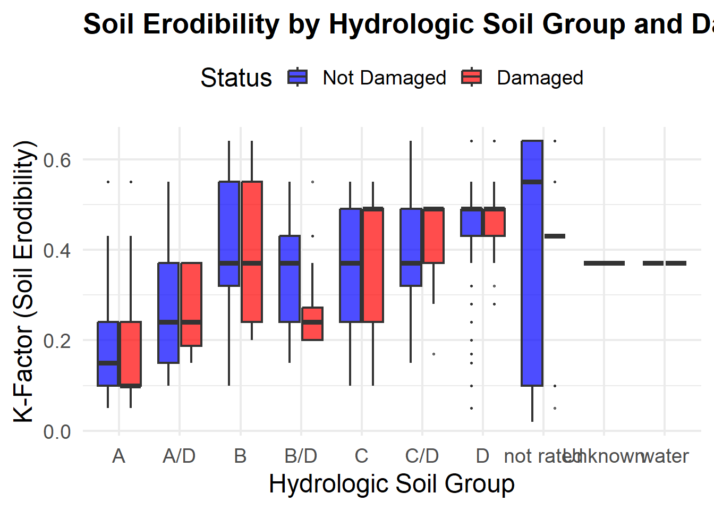

library(tidyverse)── Attaching core tidyverse packages ──────────────────────── tidyverse 2.0.0 ──
✔ dplyr 1.2.0 ✔ readr 2.1.6
✔ forcats 1.0.1 ✔ stringr 1.6.0
✔ ggplot2 4.0.2 ✔ tibble 3.3.1
✔ lubridate 1.9.4 ✔ tidyr 1.3.2
✔ purrr 1.2.1
── Conflicts ────────────────────────────────────────── tidyverse_conflicts() ──
✖ dplyr::filter() masks stats::filter()
✖ dplyr::lag() masks stats::lag()
ℹ Use the conflicted package (<http://conflicted.r-lib.org/>) to force all conflicts to become errorslibrary(lme4)Loading required package: Matrix
Attaching package: 'Matrix'
The following objects are masked from 'package:tidyr':
expand, pack, unpacklibrary(car)Loading required package: carData
Attaching package: 'car'
The following object is masked from 'package:dplyr':
recode
The following object is masked from 'package:purrr':
somemodel_data <- read_csv("Data/model_data_Classifier1.csv")Rows: 215899 Columns: 13
── Column specification ────────────────────────────────────────────────────────
Delimiter: ","
chr (5): Surface, StreamCros, HYDROGROUP, PARENT, damaged
dbl (8): Avg_Slope, K_final, MeanSlope30m, PercentForestedLand, MEAN, PM_ran...
ℹ Use `spec()` to retrieve the full column specification for this data.
ℹ Specify the column types or set `show_col_types = FALSE` to quiet this message.model_data <- model_data %>%
mutate(
Surface = factor(Surface),
HYDROGROUP = factor(HYDROGROUP),
PARENT = factor(PARENT),
StreamCros = factor(StreamCros),
damaged_bin = ifelse(damaged == "Yes", 1, 0)
) #create damage binary (0,1) and assign all categorical variables as factors
head(model_data)# A tibble: 6 × 14
Avg_Slope K_final MeanSlope30m PercentForestedLand MEAN PM_rank Culvert_Count
<dbl> <dbl> <dbl> <dbl> <dbl> <dbl> <dbl>
1 4.95 0.49 3.08 0 1.89 4 0
2 3.68 0.49 2.31 0 1.87 4 0
3 2.75 0.49 1.62 0 1.85 4 0
4 2.86 0.49 1.91 0 1.82 4 0
5 2.36 0.49 2.81 0 1.80 4 1
6 5.84 0.17 3.45 0 2.50 4 0
# ℹ 7 more variables: Surface <fct>, StreamCros <fct>, HYDROGROUP <fct>,
# PARENT <fct>, Mean_TopoConvergence_50m <dbl>, damaged <chr>,
# damaged_bin <dbl># Base model — all predictors with no interactions
predictors <- c("Avg_Slope", "K_final", "MeanSlope30m", "PercentForestedLand",
"MEAN", "PM_rank", "Culvert_Count", "Surface", "StreamCros",
"HYDROGROUP", "PARENT", "Mean_TopoConvergence_50m")
base_formula <- as.formula(paste("damaged_bin ~", paste(predictors, collapse = " + ")))
base_model <- glm(base_formula, data = model_data, family = binomial(link = "logit"))
summary(base_model)
Call:
glm(formula = base_formula, family = binomial(link = "logit"),
data = model_data)
Coefficients: (3 not defined because of singularities)
Estimate Std. Error z value Pr(>|z|)
(Intercept) -1.251e+01 8.908e-01 -14.043 < 2e-16 ***
Avg_Slope 2.219e-02 6.281e-03 3.533 0.000411 ***
K_final -8.207e-02 2.452e-01 -0.335 0.737861
MeanSlope30m 1.040e-01 7.303e-03 14.241 < 2e-16 ***
PercentForestedLand 3.757e-01 9.076e-02 4.140 3.47e-05 ***
MEAN 4.242e-01 1.791e-02 23.688 < 2e-16 ***
PM_rank 9.307e-02 1.199e-01 0.776 0.437509
Culvert_Count 3.728e-01 2.797e-02 13.332 < 2e-16 ***
SurfaceUnknown -5.205e-01 2.337e-01 -2.227 0.025966 *
SurfaceUnpaved 1.559e-01 6.949e-02 2.244 0.024836 *
StreamCrosYes 6.642e-01 6.865e-02 9.676 < 2e-16 ***
HYDROGROUPA/D -1.117e+00 3.820e-01 -2.923 0.003464 **
HYDROGROUPB 3.664e-01 1.271e-01 2.883 0.003934 **
HYDROGROUPB/D -5.543e-01 2.043e-01 -2.713 0.006676 **
HYDROGROUPC -4.977e-01 1.385e-01 -3.594 0.000326 ***
HYDROGROUPC/D -9.109e-01 1.614e-01 -5.642 1.68e-08 ***
HYDROGROUPD -1.145e+00 1.617e-01 -7.079 1.45e-12 ***
HYDROGROUPnot rated 9.642e-01 2.616e-01 3.686 0.000228 ***
HYDROGROUPUnknown -1.139e+01 1.975e+02 -0.058 0.954022
HYDROGROUPwater -8.655e-01 1.241e+00 -0.698 0.485457
PARENTDT 5.820e-01 4.939e-01 1.178 0.238680
PARENTDT/GT -5.179e-01 7.643e-01 -0.678 0.498011
PARENTDT/GT/GF -1.335e+01 4.496e+02 -0.030 0.976305
PARENTDT/O -1.200e+01 1.596e+03 -0.008 0.994003
PARENTGF -5.230e-01 1.944e-01 -2.690 0.007144 **
PARENTGF/GL -1.648e+00 6.492e-01 -2.539 0.011129 *
PARENTGL -2.692e-01 3.935e-01 -0.684 0.493899
PARENTGL/GF -1.326e+01 3.879e+02 -0.034 0.972728
PARENTGT -6.737e-01 2.727e-01 -2.470 0.013496 *
PARENTGT/DT -1.542e+00 3.887e-01 -3.967 7.26e-05 ***
PARENTGT/GF -1.454e+01 5.432e+02 -0.027 0.978649
PARENTGT/GT_R -1.220e+01 2.592e+02 -0.047 0.962463
PARENTM -1.386e+00 7.654e-01 -1.811 0.070101 .
PARENTM/GF/GL -1.397e+01 5.442e+02 -0.026 0.979525
PARENTO NA NA NA NA
PARENTO/A -1.228e+01 3.925e+02 -0.031 0.975038
PARENTUnknown NA NA NA NA
PARENTW NA NA NA NA
Mean_TopoConvergence_50m 6.210e-01 3.329e-02 18.651 < 2e-16 ***
---
Signif. codes: 0 '***' 0.001 '**' 0.01 '*' 0.05 '.' 0.1 ' ' 1
(Dispersion parameter for binomial family taken to be 1)
Null deviance: 18185 on 215898 degrees of freedom
Residual deviance: 16003 on 215863 degrees of freedom
AIC: 16075
Number of Fisher Scoring iterations: 16Anova(base_model)Analysis of Deviance Table (Type II tests)
Response: damaged_bin
LR Chisq Df Pr(>Chisq)
Avg_Slope 11.82 1 0.0005858 ***
K_final 0.11 1 0.7379496
MeanSlope30m 180.58 1 < 2.2e-16 ***
PercentForestedLand 17.21 1 3.346e-05 ***
MEAN 571.49 1 < 2.2e-16 ***
PM_rank 0
Culvert_Count 149.98 1 < 2.2e-16 ***
Surface 14.84 2 0.0005990 ***
StreamCros 84.03 1 < 2.2e-16 ***
HYDROGROUP 201.23 7 < 2.2e-16 ***
PARENT 164.19 15 < 2.2e-16 ***
Mean_TopoConvergence_50m 310.07 1 < 2.2e-16 ***
---
Signif. codes: 0 '***' 0.001 '**' 0.01 '*' 0.05 '.' 0.1 ' ' 1base_aic <- AIC(base_model)
# Screen all 66 pairwise interactions
# Generate all pairs
pairs <- combn(predictors, 2, simplify = FALSE)
# Loop through pairs, store AIC for each interaction model
pair_names <- c()
pair_aics <- c()
for (i in 1:length(pairs)) {
var1 <- pairs[[i]][1]
var2 <- pairs[[i]][2]
int_term <- paste(var1, var2, sep = ":")
int_formula <- as.formula(paste("damaged_bin ~",
paste(predictors, collapse = " + "),
"+", int_term))
int_model <- glm(int_formula, data = model_data, family = binomial(link = "logit"))
pair_names <- c(pair_names, int_term)
pair_aics <- c(pair_aics, AIC(int_model))
}Warning: glm.fit: fitted probabilities numerically 0 or 1 occurred
Warning: glm.fit: fitted probabilities numerically 0 or 1 occurred
Warning: glm.fit: fitted probabilities numerically 0 or 1 occurred
Warning: glm.fit: fitted probabilities numerically 0 or 1 occurred
Warning: glm.fit: fitted probabilities numerically 0 or 1 occurredWarning: glm.fit: algorithm did not converge# results data frame
results <- data.frame(
Interaction = pair_names,
AIC_interaction = round(pair_aics, 2)
)
# create AIC improvement column
results$AIC_improvement <- round(base_aic - results$AIC_interaction, 2)
# Sort best to worst
results <- results[order(-results$AIC_improvement), ]
print(results) Interaction AIC_interaction AIC_improvement
19 K_final:HYDROGROUP 15975.76 99.18
2 Avg_Slope:MeanSlope30m 16031.05 43.89
3 Avg_Slope:PercentForestedLand 16032.41 42.53
22 MeanSlope30m:PercentForestedLand 16032.52 42.42
15 K_final:PM_rank 16039.10 35.84
20 K_final:PARENT 16041.11 33.83
13 K_final:PercentForestedLand 16041.26 33.68
31 PercentForestedLand:MEAN 16044.94 30.00
38 PercentForestedLand:Mean_TopoConvergence_50m 16048.94 26.00
33 PercentForestedLand:Culvert_Count 16050.90 24.04
28 MeanSlope30m:HYDROGROUP 16051.49 23.45
14 K_final:MEAN 16053.68 21.26
26 MeanSlope30m:Surface 16054.06 20.88
49 PM_rank:HYDROGROUP 16057.00 17.94
58 Surface:HYDROGROUP 16058.42 16.52
41 MEAN:Surface 16059.06 15.88
43 MEAN:HYDROGROUP 16060.65 14.29
6 Avg_Slope:Culvert_Count 16061.19 13.75
4 Avg_Slope:MEAN 16062.12 12.82
60 Surface:Mean_TopoConvergence_50m 16062.53 12.41
1 Avg_Slope:K_final 16063.08 11.86
23 MeanSlope30m:MEAN 16064.48 10.46
12 K_final:MeanSlope30m 16065.47 9.47
65 HYDROGROUP:Mean_TopoConvergence_50m 16066.52 8.42
34 PercentForestedLand:Surface 16066.62 8.32
52 Culvert_Count:Surface 16067.59 7.35
30 MeanSlope30m:Mean_TopoConvergence_50m 16068.20 6.74
56 Culvert_Count:Mean_TopoConvergence_50m 16069.30 5.64
25 MeanSlope30m:Culvert_Count 16069.71 5.23
47 PM_rank:Surface 16070.71 4.23
11 Avg_Slope:Mean_TopoConvergence_50m 16072.08 2.86
40 MEAN:Culvert_Count 16073.45 1.49
45 MEAN:Mean_TopoConvergence_50m 16073.73 1.21
21 K_final:Mean_TopoConvergence_50m 16073.95 0.99
46 PM_rank:Culvert_Count 16074.53 0.41
16 K_final:Culvert_Count 16074.92 0.02
50 PM_rank:PARENT 16074.94 0.00
39 MEAN:PM_rank 16075.09 -0.15
57 Surface:StreamCros 16075.33 -0.39
7 Avg_Slope:Surface 16075.38 -0.44
63 StreamCros:Mean_TopoConvergence_50m 16075.60 -0.66
17 K_final:Surface 16075.71 -0.77
53 Culvert_Count:StreamCros 16075.75 -0.81
42 MEAN:StreamCros 16076.42 -1.48
37 PercentForestedLand:PARENT 16076.49 -1.55
32 PercentForestedLand:PM_rank 16076.51 -1.57
48 PM_rank:StreamCros 16076.60 -1.66
27 MeanSlope30m:StreamCros 16076.64 -1.70
54 Culvert_Count:HYDROGROUP 16076.75 -1.81
5 Avg_Slope:PM_rank 16076.85 -1.91
51 PM_rank:Mean_TopoConvergence_50m 16076.91 -1.97
8 Avg_Slope:StreamCros 16076.93 -1.99
18 K_final:StreamCros 16076.93 -1.99
24 MeanSlope30m:PM_rank 16076.93 -1.99
35 PercentForestedLand:StreamCros 16076.94 -2.00
61 StreamCros:HYDROGROUP 16077.53 -2.59
36 PercentForestedLand:HYDROGROUP 16078.73 -3.79
44 MEAN:PARENT 16079.65 -4.71
9 Avg_Slope:HYDROGROUP 16084.00 -9.06
55 Culvert_Count:PARENT 16086.40 -11.46
29 MeanSlope30m:PARENT 16094.48 -19.54
10 Avg_Slope:PARENT 16094.74 -19.80
66 PARENT:Mean_TopoConvergence_50m 16095.08 -20.14
62 StreamCros:PARENT 16095.83 -20.89
59 Surface:PARENT 16110.87 -35.93
64 HYDROGROUP:PARENT 16331.27 -256.33# the best model had a K_final:HYDROGROUP interaction term
best_model <- glm(damaged_bin ~ Avg_Slope + K_final + MeanSlope30m +
PercentForestedLand + MEAN + PM_rank + Culvert_Count +
Surface + StreamCros + HYDROGROUP + PARENT +
Mean_TopoConvergence_50m +
K_final:HYDROGROUP,
data = model_data, family = binomial(link = "logit"))
summary(best_model)
Call:
glm(formula = damaged_bin ~ Avg_Slope + K_final + MeanSlope30m +
PercentForestedLand + MEAN + PM_rank + Culvert_Count + Surface +
StreamCros + HYDROGROUP + PARENT + Mean_TopoConvergence_50m +
K_final:HYDROGROUP, family = binomial(link = "logit"), data = model_data)
Coefficients: (5 not defined because of singularities)
Estimate Std. Error z value Pr(>|z|)
(Intercept) -1.065e+01 1.024e+00 -10.401 < 2e-16 ***
Avg_Slope 2.227e-02 6.283e-03 3.544 0.000395 ***
K_final -2.061e+00 6.945e-01 -2.967 0.003004 **
MeanSlope30m 1.050e-01 7.313e-03 14.357 < 2e-16 ***
PercentForestedLand 2.302e-01 9.231e-02 2.494 0.012645 *
MEAN 4.156e-01 1.807e-02 23.002 < 2e-16 ***
PM_rank -1.058e-01 1.391e-01 -0.761 0.446802
Culvert_Count 3.697e-01 2.803e-02 13.187 < 2e-16 ***
SurfaceUnknown -5.195e-01 2.338e-01 -2.222 0.026316 *
SurfaceUnpaved 1.737e-01 6.963e-02 2.495 0.012604 *
StreamCrosYes 6.641e-01 6.877e-02 9.656 < 2e-16 ***
HYDROGROUPA/D -6.562e-01 9.305e-01 -0.705 0.480647
HYDROGROUPB 2.118e-01 2.419e-01 0.876 0.381144
HYDROGROUPB/D 1.017e+00 5.487e-01 1.854 0.063758 .
HYDROGROUPC -7.868e-01 2.609e-01 -3.016 0.002563 **
HYDROGROUPC/D -3.915e+00 4.144e-01 -9.448 < 2e-16 ***
HYDROGROUPD -3.859e+00 5.928e-01 -6.509 7.56e-11 ***
HYDROGROUPnot rated 4.201e-01 6.791e-01 0.619 0.536157
HYDROGROUPUnknown -1.148e+01 1.975e+02 -0.058 0.953639
HYDROGROUPwater -1.721e+00 1.316e+00 -1.308 0.190926
PARENTDT -5.006e-02 5.666e-01 -0.088 0.929600
PARENTDT/GT -1.196e+00 7.802e-01 -1.533 0.125200
PARENTDT/GT/GF -1.351e+01 4.499e+02 -0.030 0.976041
PARENTDT/O -1.203e+01 1.595e+03 -0.008 0.993983
PARENTGF -7.452e-01 2.190e-01 -3.403 0.000668 ***
PARENTGF/GL -1.980e+00 7.387e-01 -2.680 0.007364 **
PARENTGL -7.733e-01 4.457e-01 -1.735 0.082781 .
PARENTGL/GF -1.376e+01 3.881e+02 -0.035 0.971724
PARENTGT -9.483e-01 3.089e-01 -3.070 0.002142 **
PARENTGT/DT -1.845e+00 4.141e-01 -4.455 8.39e-06 ***
PARENTGT/GF -1.476e+01 5.439e+02 -0.027 0.978358
PARENTGT/GT_R -1.251e+01 2.594e+02 -0.048 0.961551
PARENTM -2.309e+00 9.279e-01 -2.488 0.012851 *
PARENTM/GF/GL -1.418e+01 5.444e+02 -0.026 0.979214
PARENTO NA NA NA NA
PARENTO/A -1.177e+01 3.931e+02 -0.030 0.976110
PARENTUnknown NA NA NA NA
PARENTW NA NA NA NA
Mean_TopoConvergence_50m 6.184e-01 3.347e-02 18.477 < 2e-16 ***
K_final:HYDROGROUPA/D -1.668e+00 3.470e+00 -0.481 0.630856
K_final:HYDROGROUPB 1.290e+00 8.061e-01 1.600 0.109661
K_final:HYDROGROUPB/D -4.932e+00 1.931e+00 -2.555 0.010627 *
K_final:HYDROGROUPC 1.535e+00 8.154e-01 1.883 0.059697 .
K_final:HYDROGROUPC/D 8.141e+00 1.083e+00 7.515 5.67e-14 ***
K_final:HYDROGROUPD 6.744e+00 1.340e+00 5.033 4.84e-07 ***
K_final:HYDROGROUPnot rated 2.396e+00 1.654e+00 1.449 0.147437
K_final:HYDROGROUPUnknown NA NA NA NA
K_final:HYDROGROUPwater NA NA NA NA
---
Signif. codes: 0 '***' 0.001 '**' 0.01 '*' 0.05 '.' 0.1 ' ' 1
(Dispersion parameter for binomial family taken to be 1)
Null deviance: 18185 on 215898 degrees of freedom
Residual deviance: 15890 on 215856 degrees of freedom
AIC: 15976
Number of Fisher Scoring iterations: 16Anova(best_model)Analysis of Deviance Table (Type II tests)
Response: damaged_bin
LR Chisq Df Pr(>Chisq)
Avg_Slope 11.90 1 0.0005623 ***
K_final 0.11 1 0.7379496
MeanSlope30m 183.31 1 < 2.2e-16 ***
PercentForestedLand 6.23 1 0.0125378 *
MEAN 540.60 1 < 2.2e-16 ***
PM_rank 0
Culvert_Count 147.01 1 < 2.2e-16 ***
Surface 16.46 2 0.0002669 ***
StreamCros 83.73 1 < 2.2e-16 ***
HYDROGROUP 201.23 7 < 2.2e-16 ***
PARENT 139.80 15 < 2.2e-16 ***
Mean_TopoConvergence_50m 306.10 1 < 2.2e-16 ***
K_final:HYDROGROUP 113.18 7 < 2.2e-16 ***
---
Signif. codes: 0 '***' 0.001 '**' 0.01 '*' 0.05 '.' 0.1 ' ' 1# K_final distribution by HYDROGROUP, colored by damage status
ggplot(model_data, aes(x = HYDROGROUP, y = K_final, fill = damaged)) +
geom_boxplot(alpha = 0.7, outlier.size = 0.5) +
scale_fill_manual(values = c("No" = "blue", "Yes" = "red"),
labels = c("Not Damaged", "Damaged")) +
labs(title = "Soil Erodibility by Hydrologic Soil Group and Damage Status",
x = "Hydrologic Soil Group",
y = "K-Factor (Soil Erodibility)",
fill = "Status") +
theme_minimal(base_size = 18) +
theme(
plot.title = element_text(size = 20, face = "bold"),
legend.position = "top"
)